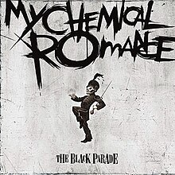

I Brought You My Bullets, You Brought Me Your Love
I Brought You My Bullets, You Brought Me Your Love merupakan sebuah album musik pertama karya My
Chemical
Romance dirilis tahun 2002. Lagu utama di album ini ialah Honey, This Mirror Isn't Big Enough for
the
Two of
Us.
Three Cheers for Sweet Revenge
Three Cheers For Sweet Revenge adalah album kedua dari band My Chemical Romance. Album ini dirilis
pada
tahun 2004 melalui Reprise Records.
The Black Parade

The Black Parade adalah album studio ke-3 karya My Chemical
Romance. Album ini dirilis pada tahun 2006 melalui Reprise Records dan diproduseri oleh Rob Cavallo.
Album ini menjadi satu-satunya album yang mengandung permainan drum Bob Bryar sebagai anggota My
Chemical Romance, setelah drummer mereka sebelumnya, Matt Pelissier, meninggalkan MCR pada Juli
2004.
Bob Bryar kemudian juga meninggalkan MCR pada Maret 2010. Album ini adalah album konsep dengan tema
rock
opera yang berkisah seputar karakter penderita kanker bernama "The Patient" yang sedang menemui
kematian.
Danger Days: The True Lives Of The Fabulous Killjoys
Danger Days: The True Lives of the Fabulous Killjoys adalah album studio keempat karya band
alternative
rock Amerika My Chemical Romance. Album ini diproduseri oleh Rob Cavallo dan dirilis melalui Warner
Music dan Reprise Records pada 19 November 2010. Album ini baru dirilis pada 22 November 2010 di
Amerika
Serikat melalui Reprise Records.
Conventional Weapon
Senjata Konvensional adalah album kompilasi oleh band rock Amerika My Chemical Romance , diproduksi
oleh
Brendan O'Brien dan dirilis sebagai serangkaian single antara Oktober 2012 dan Februari 2013. Ini
menandai rilis terakhir materi studio band sebelum mereka bubar pada tahun 2013. hingga 2019.